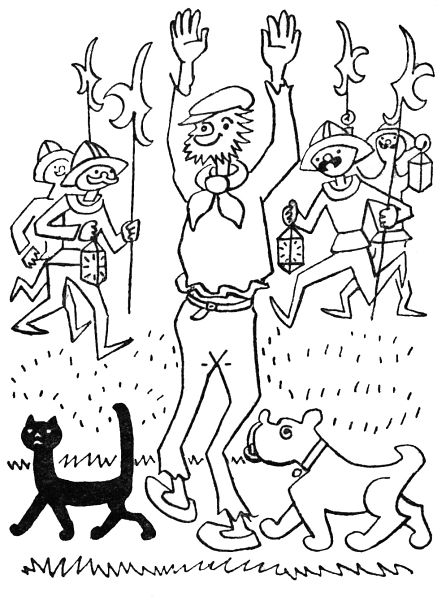

2. Co všechno kočka dovede
Tedy jak víte, ta kočka se jmenovala Jůra, ale princezna jí říkala ještě všelijak: macek a macourek, číča, číčinka a číčánek, míca a mícinka, mourek a kočenka, a z toho už vidíte, že ji měla tuze ráda. Sotva ráno otevřela oči, už našla macka na peřině: Jůra si tam, lenoch, hověla a předla, aby se zdálo, že něco dělá. Obě se pak umyly současně, kočka ovšem o mnoho důkladněji, třebaže jen tlapkou a jazykem; zato zůstala dávno ještě čistá, když už se princezna umazala tak pořádně a všestranně, jak to jen děti dovedou.
Ale přitom byla Jůra kočka jako každá jiná; jenomže ráda seděla a dřímala na královském trůně, což se jiným kočkám obyčejně nestává. Snad si přitom vzpomínala, že její vzdálený strýček, lev, je králem všech zvířat. Nebo to jen tak vypadalo, jako by vzpomínala; stačilo, aby nějaká pošetilá myš vystrčila z díry hlavu, – jedním skokem ji Jůra měla a šla ji pyšně položit k nohám trůnu, ať to bylo před sebe větším a slavnějším shromážděním.
Jednou měl král porovnat při dvou velmožných pánů. Oba stáli před stupni trůnu a hádali se náramně, kdo z nich je v právu. Když byli v nejlepším, přišla Jůra, položila na zem chycenou myš a čekala s hrdostí, že bude pochválena. První pán si jí ani nevšimnul, zato druhý se rychle shýbl a Jůru pohladil. Aha, řekl si král hnedle, tohle je člověk spravedlivý, protože má uznání ke každé zásluze. A vida, ukázalo se pak, že měl pravdu.
Tak vám měl král v paláci dva psy, jeden se jmenoval Buffo a druhý Buffino. Když uviděli poprvé Jůru dřímat na zápraží, koukli se na sebe, jako by si chtěli říci: Poslouchej, kolego, tohleto není našinec. A jako by se smluvili, hnali se na ubohou Jůru. Kočka jen couvla ke zdi a naježila ocas, že byl tlustý jako koštiště. Kdyby byli Buffo a Buffino chytřejší, věděli by, co tím kočka míní, když tak naježí ocas; ale že byli hloupí, chtěli si k ní nejdříve čuchnout. Napřed Buffo, ale jen si čuchnul, už dostal takovou přes nos, že zakviknul, stáhl ocas a dal se na útěk, že se po celou hodinu nemohl zastavit a ještě pak dva dny se třásl leknutím.
Když to Buffino viděl, trochu se zarazil, ale myslel si, že musí dělat hrdinu. „Poslouchej, zmetku,“ povídá Jůře, „se mnou si nezačínej; já dovedu štěkat tak, že se mne i měsíc na nebi bojí.“ A na důkaz toho zaštěkal tak silně, že na míli cesty popraskaly tabulky ve všech oknech.
Ale Jůra ani nemrkla očima, a když Buffino doštěkal, řekla: „No, křičet trochu dovedeš; ale když já zasyčím, i hadovi stydne strachem v žilách krev.“ A přitom zasyčela tak hrozně, že Buffinovi se strachem zježil každý vlas.
Když se trochu vzpamatoval, začal znovu: „No co, syčet ještě není hrdinství; ale koukej, jak já dovedu utíkat!“ A než se kočka nadála, oběhl kolem dokola celý palác tak rychle, že se z toho samotnému paláci zatočila hlava.
Jůra se tomu tuze podivila, ale dělala jakoby nic. „No,“ povídá, „aspoň vím, jak budeš přede mnou utíkat; ale kdyby na mne přišel někdo stotisíckrát silnější než ty, já bych mu utekla takhle.“ A třemi skoky byla nahoře v koruně vysokého stromu – tak vysoko, že z toho Buffino dostal hroznou závrať.
Když zase přišel k sobě, řekl: „No víš, pořádný pes po stromech ani neleze; ale chceš-li už vědět, co já dovedu, dej pozor: čichám, čichám, že královna v sousední říši peče k obědu holoubata, a my že budeme mít zítra v poledne pečenou husu.“
Kočka si potajmu čichla také, ale nic necítila; podivila se tedy nesmírně, jaký má pes náramný čich, ale nedala na sobě nic znát. „No,“ řekla, „to nic není proti mému sluchu; já například slyším, že právě teď naší královně spadla na zem jehla a že v sousední říši budou za čtvrt hodiny zvonit poledne.“
Nad tím zase žasl Buffino, ale aby se jen tak nepoddal, řekl: „No tak víš co? Nebudeme už na sebe štěkat. Neboj se mne a slez dolů.“
„Já,“ povídá na to Jůra, „se tě ovšem nebojím. Ale víš co? Neboj se mne ty a vylez sem ke mně na strom.“
„Já,“ povídá Buffino, „bych hnedle vylezl; ale dřív musíš na důkaz přátelství vrtět takhle ocasem, jako to děláme my psi.“ Přitom začal vrtět ocasem tak rychle, že to svištělo.
Jůra to zkouší, zkouší, ale nějak jí to nešlo; no bodejť, když tomu pánbůh naučil jenom psy! Ale přece, aby si nezadala nějakou bázlivostí, slezla ze stromu a šla k Buffinovi. „My kočky,“ povídá, „když nemyslíme na nic zlého, takhle předeme. Mohl bys to maličko zkusit z přátelství ke mně.“
Buffino tedy zkusil trochu příst, ale kdežpak! vyšlo z něho takové zavrčení, že se sám zastyděl. „Pojď,“ řekl honem, „půjdeme raději před vrata štěkat na lidi; to ti je, člověče, báječná psina!“
„Myslím,“ namítala Jůra skromně, „že bych to hrubě nedovedla; ale nemáš-li nic proti tomu, půjdeme si sednout na kraj střechy a dívat se na všechno hodně zvysoka.“

„Odpusť,“ řekl Buffino rozpačitě, „ale když jsem vysoko, tak ti mám takovou jakousi závrať. Nejlepší by bylo, kdybychom šli spolu honit zajíce.“
„Zajíce,“ povídá kočka, „bych honit nedovedla; já nemám, hochu, takové nohy. Ale kdybys šel se mnou, ukázala bych ti strom, kde bychom mohli spolu chytat ptáčky.“
Buffino smutně přemýšlel. „Jářku, Jůro,“ povídá konečně, „takhle by to nešlo dohromady. Víš ty co? Já zůstanu psem v lese a na ulici, a ty zůstaneš kočkou na stromech a na střeše. Ale tady v paláci a na dvoře a v zahradě nebudeme pes a kočka, ale dva kamarádi.“
To se také stalo, a oba si na sebe zvykli tak, že si odkoukali i své způsoby. Tak Jůra se naučila běhat za princeznou jako pes, a Buffino, když viděl, že kočka nosí králi k nohám ulovené myši, nosil mu před trůn vítězoslavně kosti, které vyhrabal na smetišti či našel na ulici. Za tohle ovšem nebyl tak chválen jako kočka za své myši.
Jednou byla hluboká noc a Buffino spal ve své boudě; to víte, děti, že královský pes má boudu z cedrového dřeva. Zrovna se mu zdálo, že vidí zajíce, a hnal se za ním tak, že se mu i ve spaní pracky škubaly, když tu ucítil na nose lehkou ťafku. „Ha,“ vyletěl ze spaní, „ha, co se děje?“
„Pst,“ zašeptal známý hlas, „buď trochu tiše.“ Buffino poznal Jůru; byla černější než noc, jen její zelené oči chytře a vzrušeně svítily. „Sedím ti na střeše,“ vypravovala Jůra šeptem, „a myslím na ledacos, jak už mám ve zvyku; a tu, vždyť znáš můj sluch, slyším něčí kroky daleko, daleko odtud v královské zahradě.“
„Ha,“ zvolal Buffino.
„Tiše,“ zasykla Jůra. „Četu, Buffino, že to je zloděj. Víš ty co? Půjdeme ho chytit.“
„Ba,“ vyštěkl pes samou horlivostí, „ba, už běžím.“ Sebrali se a šli spolu do zahrady.
Byla černočerná noc. Buffino chtěl běžet napřed, ale tuze se potmě mátl a klopýtal každým krokem. „Jůro,“ šeptal úzkostně. „Jůro, vždyť já nevidím na krok!“
„Já,“ řekla Jůra, „vidím v noci jako ve dne. Půjdu napřed a ty jdi po čichu za mnou.“ To také udělali.
„Oho,“ vykřikl Buffino najednou, „čichám něčí stopy.“ S nosem až u země hnal se teď po stopě, jako by nejjasněji viděl. Jůra za ním. „Pst,“ zašeptala po chvilce, „už ho vidím. Je zrovna před tebou.“
„Aha,“ vykřikl Buffino silným hlasem, „hrrrr, hrrrr na něj, vrrrrhněte se na něj! Ha, ha chlape, ha babo, ha padouchu, ha ty halamo! Škrrrrť ho, dav ho, maž ho, mel ho, vyhrrrrň si na něj rrrrukávy a rrrroztrrrrhej ho! Ha, ha, ha!“
Když to zloděj slyšel, lekl se strašně a dal se na útěk. Buffino za ním, pokousal mu lýtka, roztrhal nohavice, skočil mu pod nohy, že ho porazil, a ještě mu nakousl ucho. Zloděj taktak že mohl vyskočit, a vylezl strachem na strom. Ale teď zas přišla řada na Jůru: vylezla za ním, skočila mu do týla a drápala, kousala, škrábala, sekala, jak jen mohla. „Pfff“ prskala přitom a syčela, „zasssolím ti, usssmrtím tě, nasssekám ti, rozsssápu tě na kusssy.“
„Ha,“ řval dole Buffino, „dav ho, maž ho, mlať ho, vraždi ho, sraz ho, hoď mi ho, zab ho, bouchni ho, spoutej ho, kousni, nepusť ho!“
„Vzdávám se,“ vykřikl zloděj v smrtelné úzkosti a spadl ze stromu jako pytel, klekl na kolena, zvedl ruce k nebi a prosil: „Nezabíjejte mne, prosím vás, vždyť já se už vzdávám. Veďte mne, proboha, kam chcete.“
Tak tedy se dali na cestu zpátky: napřed Jůra s ocasem vztyčeným jako šavle, pak zloděj s rukama zdviženýma, a naposledy Buffino. Na půl cestě je potkaly stráže s lucernami, protože ten hluk je probudil, a připojily se k průvodu. Tak přivedli Jůra a Buffno zloděje s velikou slávou do zámku. Sám král a králka se vzbudili a dívali se na to oknem, jen princezna spala a zaspala to všechno, a byla by zaspala snad i snídani, kdyby si Jůra, jako každého rána, nebyla přišla pohovět do jejích peřin s tváří tak líbeznou, jako by se docela nic nebylo v noci přihodilo.
Ledacos ještě Jůra dovedla, ale to by ta pohádka neměla ani konce. Proto jen v rychlosti povím, že někdy chytala tlapkou v potůčku ryby, žrala ráda okurkový salát, chytala ptáčky, třeba to měla zakázáno, a přitom se tvářila nevinně jako anděl a dovedla si hrát tak hezky, že by se člověk na to celý den díval. Kdo by chtěl vědět o Jůře ještě něco víc, ať se jen s láskou dívá na kteroukoliv kočku; každá má v sobě kus Jůry a každá dovede tisíce spanilých a veselých kousků a neskrývá se s nimi před nikým, kdo ji netrápí.